Dental service utilization is a key indicator of population oral health and access to care. Understanding long-term patterns in utilization helps identify disparities across age groups, service types, and geographic areas.
California Medi-Cal administrative records provide an opportunity to examine system-level trends over time, while national NHANES oral health estimates offer broader context on disease burden and prevention gaps.
Our project integrates these two data sources to understand:
Our project began with the following questions:
Overall trends
Age-based disparities
Service categories
COVID-19 impact
National comparison
# Load required packages
library(tidyverse)
library(janitor)
library(knitr)
library(here)
setwd("..")
# Read raw data
raw_data <- read_csv("datasets/ca_dental.csv")
# Define age group order for proper sorting
age_order <- c(
"Age <1","Age 1–2","Age 3–5","Age 6–9",
"Age 10–14","Age 15–18","Age 19–20","Age 21–34",
"Age 35–44","Age 45–64","Age 65–74","Age 75+"
)
# Clean dataset: standardize names, remove invalid rows, clean text
clean_data_basic <- raw_data |>
clean_names() |> # Standardize column names
mutate(desc_clean = str_to_lower(str_squish(users_annotation_description))) |>
filter(
is.na(desc_clean) |
!desc_clean %in% c(
"no data available",
"cell suppressed for small numbers",
"cell suppressed for complementary cell"
)
) |>
select(-desc_clean) |>
mutate(
measure = measure |>
str_replace_all("[–—∼']", "-") |>
str_remove_all("\\s*\$begin:math:text$[^()]*\\$end:math:text$") |>
str_squish()
) |>
rename(
year = calendar_year,
age_group = age_filter,
denominator = denominator_3_months_continuous_eligibility
) |>
mutate(
age_group = age_group |>
str_replace_all("[–—∼'-]", "–") |>
str_squish() |>
str_replace_all("^Age\\s*<\\s*1$", "Age <1") |>
str_replace_all("^Age 1–2$|^Age 1-2$", "Age 1–2") |>
str_replace_all("^Age 3–5$|^Age 3-5$", "Age 3–5") |>
str_replace_all("^Age 6–9$|^Age 6-9$", "Age 6–9") |>
str_replace_all("^Age 10–14$|^Age 10-14$", "Age 10–14") |>
str_replace_all("^Age 15–18$|^Age 15-18$", "Age 15–18") |>
str_replace_all("^Age 19–20$|^Age 19-20$", "Age 19–20") |>
str_replace_all("^Age 21–34$|^Age 21-34$", "Age 21–34") |>
str_replace_all("^Age 35–44$|^Age 35-44$", "Age 35–44") |>
str_replace_all("^Age 45–64$|^Age 45-64$", "Age 45–64") |>
str_replace_all("^Age 65–74$|^Age 65-74$", "Age 65–74") |>
str_replace_all("^Age 75\\+$", "Age 75+"),
age_group = factor(age_group, levels = age_order)
) |>
arrange(year, age_group, measure)
# Simplify measure names
clean_data_simple <- clean_data_basic |>
mutate(
measure = case_when(
measure == "Annual Dental Visit" ~ "Dental visit",
measure == "Exams/Oral Health Evaluations" ~ "Exam/Evaluation",
measure == "Treatment for Caries or Caries–Preventive Procedure" ~ "Caries treatment",
measure == "Use of Dental Treatment Services" ~ "Treatment services",
measure == "Use of Diagnostic Services" ~ "Diagnostic services",
measure == "Use of Preventive Services" ~ "Preventive services",
measure == "Use of Restorative Services" ~ "Restorative services",
measure == "Use of Sealant" ~ "Sealant use",
TRUE ~ measure
)
)
# Keep only key variables and rename utilization column
clean_data_final <- clean_data_simple |>
select(
year,
age_group,
measure,
users,
denominator,
utilization_percent
) |>
rename(
utilization_rate = utilization_percent
)
# Save cleaned dataset
write_csv(clean_data_final, here("datasets", "clean_ca.csv"))The original Medi-Cal dental utilization dataset contained multiple
annotation fields, coded measure names, and inconsistent formatting
across variables.
To prepare the data for analysis, we conducted a structured cleaning
process in R, summarized as follows:
Column normalization:
All column names were standardized using
janitor::clean_names() to ensure consistent lower-case
formatting with underscores.
Invalid record removal:
Rows annotated as “No data available”, “Cell suppressed for
small numbers”, or “Cell suppressed for complementary
cell” were excluded.
Measure text cleaning:
All dash symbols were unified, parentheses and code ranges (e.g., CPT
codes) were removed, and extra whitespace was trimmed.
Age group standardization:
Age labels were harmonized (e.g., Age1-2,
Age 1 – 2 → Age 1–2) and ordered logically
from <1 to 75+.
Annotation field removal:
Redundant annotation columns were dropped, retaining only core
analytical variables.
Variable renaming:
Key variables were renamed for clarity and consistency (e.g.,
Calendar.Year → year,
Age.Filter → age_group,
Denominator..3.Months.Continuous.Eligibility. →
denominator,
Utilization → utilization_rate).
Measure simplification:
Long descriptive measure names were shortened to concise forms
(e.g.,
Annual Dental Visit → Dental visit,
Use of Preventive Services → Preventive
services).
The final cleaned dataset contains six essential
variables — year, age_group,
measure, users, denominator, and
utilization_rate — suitable for descriptive and
longitudinal analysis.
rename_tbl <- tibble::tribble(
~original_name, ~new_name, ~meaning_en,
"calendar_year", "year", "Reporting year (CY xxxx)",
"age_filter", "age_group", "Standardized age group (ordered)",
"measure", "measure", "Type of dental service (cleaned and simplified)",
"users", "users", "Number of individuals using the service (numerator)",
"denominator_3_months_continuous_eligibility", "denominator", "Population with ≥3 months continuous eligibility (denominator for utilization rate)",
"utilization", "utilization_rate", "Service utilization rate = users ÷ denominator"
)
knitr::kable(
rename_tbl,
align = "lll",
caption = "Table 1: Final variable names and definitions"
)| original_name | new_name | meaning_en |
|---|---|---|
| calendar_year | year | Reporting year (CY xxxx) |
| age_filter | age_group | Standardized age group (ordered) |
| measure | measure | Type of dental service (cleaned and simplified) |
| users | users | Number of individuals using the service (numerator) |
| denominator_3_months_continuous_eligibility | denominator | Population with ≥3 months continuous eligibility (denominator for utilization rate) |
| utilization | utilization_rate | Service utilization rate = users ÷ denominator |
library(tidyverse)
library(readr)
# Load the data
nhanes <- read_csv("datasets/nhanes_oral.csv")
# Delete useless columns (presentation standards and notes)
cols_to_drop <- c("Presentation Standard", "Note1", "Note2", "Notea", "Noteb")
nhanes <- nhanes %>%
select(-any_of(cols_to_drop))
# Rename columns to standardized lowercase format
nhanes <- nhanes %>%
rename(
survey_years = `Survey Years`,
sex = Sex,
age_group = `Age Group`,
race_ethnicity = `Race and Hispanic Origin`,
measure = Measure,
percent = Percent,
se = `Standard Error`,
ci_lower = `Lower 95% CI Limit`,
ci_upper = `Upper 95% CI Limit`
)
# Clean percent values: remove "%" symbol and convert to numeric
nhanes <- nhanes %>%
mutate(
percent = str_replace_all(as.character(percent), "%", ""),
percent = as.numeric(percent)
)
# Clean years and create mid-year variable for trend analysis
# Example: "1999–2000" becomes year_mid = 1999.5
nhanes <- nhanes %>%
mutate(
survey_years = str_replace_all(survey_years, "–", "-"),
year_mid = as.numeric(str_sub(survey_years, 1, 4)) + 0.5
)
# Standardize measure names with short codes
measure_map <- c(
"Total Dental Caries in Primary Teeth" = "total_primary",
"Total Dental Caries in Permanent Teeth" = "total_perm",
"Untreated Dental Caries in Primary Teeth" = "untreated_primary",
"Untreated Dental Caries in Permanent Teeth" = "untreated_perm",
"Sealants on Permanent Teeth" = "sealant_perm",
"Sealants on Permanent and Primary Teeth" = "sealant_all"
)
nhanes <- nhanes %>%
mutate(measure_clean = recode(measure, !!!measure_map))
# Filter to specific age groups (exclude broad/aggregate groups)
nhanes <- nhanes %>%
filter(age_group %in% c(
"2-5", "6-11", "12-19",
"20-29", "30-39", "40-49", "50-59",
"60-69", "70 and over"
))
# Remove rows with missing percent values
nhanes_clean <- nhanes %>%
filter(!is.na(percent))
# Select and order final variables
nhanes_clean <- nhanes_clean %>%
select(
survey_years, year_mid, sex, age_group,
race_ethnicity, measure, measure_clean,
percent, se, ci_lower, ci_upper
)
# Save cleaned dataset
write_csv(nhanes_clean, "datasets/nhanes_oral_clean.csv")We used NHANES oral health data and first removed non-analytic note variables (e.g., presentation and footnote columns). Variable names were standardized to a consistent snake_case format, and percentage values were converted from character strings with “%” symbols to numeric. Survey year ranges (e.g., “2011–2012”) were cleaned and used to derive a mid-point year variable for trend analyses. We created a simplified measure variable (e.g., “total_perm”, “untreated_primary”) and restricted the dataset to pre-specified age groups (2–5, 6–11, 12–19, 20–29, 30–39, 40–49, 50–59, 60–69, ≥70 years). Finally, observations with missing percentages were excluded, and the cleaned dataset was saved for subsequent analyses.
library(dplyr)
library(stringr)
library(readr)
library(tidyr)
library(ggplot2)
library(scales)
ca_data <- read.csv("datasets/clean_ca.csv") %>%
mutate(
age_group_std = str_replace_all(age_group, "–", "-"),
age_group_baseline = case_when(
age_group_std %in% c("Age <1","Age 1-2") ~ "Infant/Toddler",
age_group_std == "Age 3-5" ~ "Early Childhood",
age_group_std == "Age 6-9" ~ "Middle Childhood",
age_group_std %in% c("Age 10-14","Age 15-18") ~ "Adolescent",
age_group_std %in% c("Age 19-20","Age 21-34") ~ "Young Adult",
age_group_std %in% c("Age 35-44","Age 45-64") ~ "Middle Adult",
age_group_std %in% c("Age 65-74","Age 75+") ~ "Older Adult"
),
age_group_alt = case_when(
age_group_std %in% c("Age <1","Age 1-2") ~ "Infant/Toddler",
age_group_std == "Age 3-5" ~ "Early Childhood",
age_group_std %in% c("Age 6-9","Age 10-14") ~ "Middle Childhood",
age_group_std == "Age 15-18" ~ "Adolescent",
age_group_std %in% c("Age 19-20","Age 21-34") ~ "Young Adult",
age_group_std %in% c("Age 35-44","Age 45-64") ~ "Middle Adult",
age_group_std %in% c("Age 65-74","Age 75+") ~ "Older Adult"
),
year_num = as.numeric(str_replace(year, "CY ", "")),
util_rate_num = parse_number(utilization_rate) / 100
)
p_main <- ggplot(ca_data, aes(year_num, util_rate_num, color = age_group_baseline)) +
geom_line(size = 1) +
scale_y_continuous(labels = percent_format()) +
labs(title = "CA Medicaid: Dental Utilization by Life Stage",
x = "Year", y = "Utilization Rate") +
theme_bw()
sens_data <- bind_rows(
ca_data %>% transmute(year_num, util_rate_num,
age_group = age_group_baseline,
scenario = "Baseline"),
ca_data %>% transmute(year_num, util_rate_num,
age_group = age_group_alt,
scenario = "Alternative")
)
p_sens <- ggplot(sens_data, aes(year_num, util_rate_num, color = scenario)) +
geom_line(size = 1) +
facet_wrap(~ age_group) +
scale_y_continuous(labels = percent_format()) +
labs(title = "Sensitivity Analysis: Baseline vs Alternative Grouping",
x = "Year", y = "Utilization Rate") +
theme_bw()
sens_summary <- sens_data %>%
group_by(age_group, scenario) %>%
summarise(mean_rate = mean(util_rate_num), .groups = "drop") %>%
pivot_wider(names_from = scenario, values_from = mean_rate) %>%
mutate(diff = Alternative - Baseline)
p_main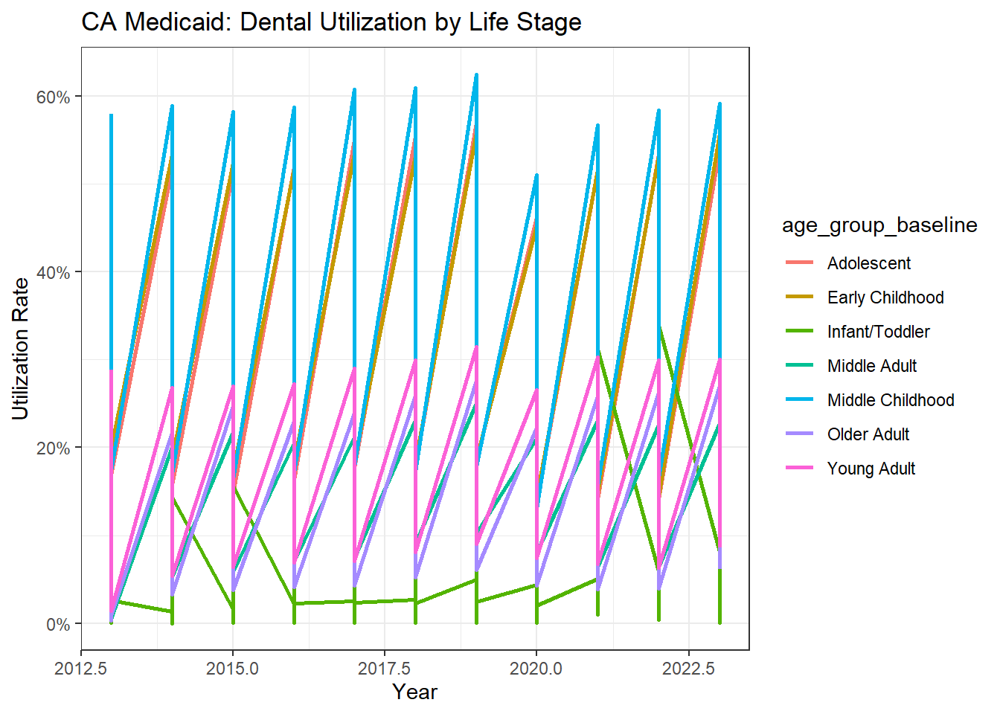
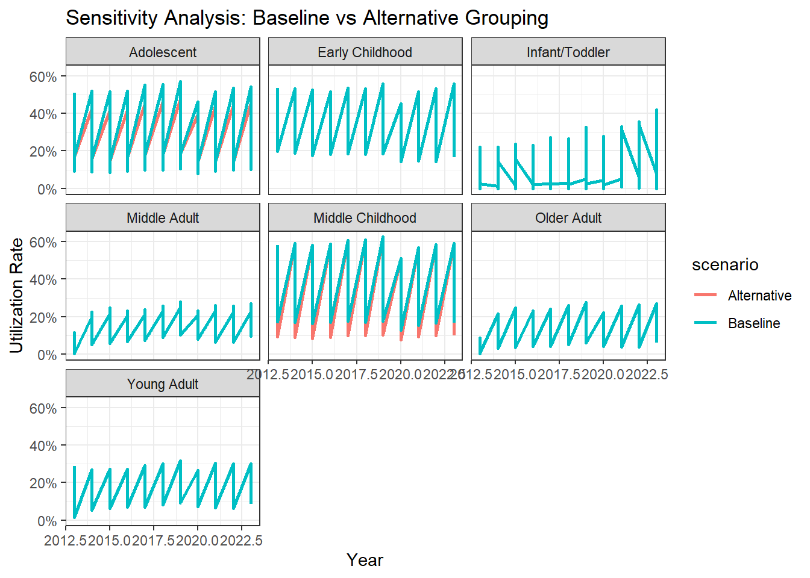
Our project involved two major datasets. Below we summarize the key steps taken to prepare each dataset for analysis.
1. California Medi-Cal Dental Utilization Data
Standardized variable names and removed annotation rows such as “no data available”.
Cleaned and unified age-group labels (e.g., “Age 10–14”, “Age 35–44”) and set ordered factors.
Harmonized service measure names into readable categories (e.g., Preventive services, Restorative services).
Selected core variables (year, age_group, measure, users, denominator, utilization_rate).
Saved the final cleaned dataset as
clean_ca.csv.
2. NHANES Oral Health Prevalence Data
Removed unused metadata columns (presentation standards and notes).
Renamed variables into standardized lowercase names.
Cleaned percentage values by removing “%” and converting to numeric.
Created year_mid variable using survey cycle midpoints for trend modeling.
Recoded long measure labels into concise categories (e.g., total_perm, untreated_primary).
Filtered to analytical NHANES age groups and removed rows with missing values.
Saved cleaned dataset as
nhanes_oral_clean.csv.
3. Sensitivity Analysis on Age Group Definitions
“Sensitivity analysis comparing the baseline and alternative age-group definitions showed that five of the seven life-stage categories produced identical utilization estimates. Only Adolescent and Middle Childhood differed slightly (–1.8% and –3.2% respectively), reflecting the intentional boundary shift of the 10–14 age segment. These differences were small and did not change temporal trends or overall conclusions; therefore, the baseline life-stage grouping was retained for the main analysis.”
Together, these datasets allow comparison of service use patterns (California) and disease burden (NHANES) over time.
This section summarizes descriptive findings from both the California administrative dataset (2013–2023) and national NHANES oral health prevalence data. Together, these analyses illustrate statewide utilization patterns, disparities by age, variation across service types, the impact of COVID-19, and how California trends compare to national disease burden.
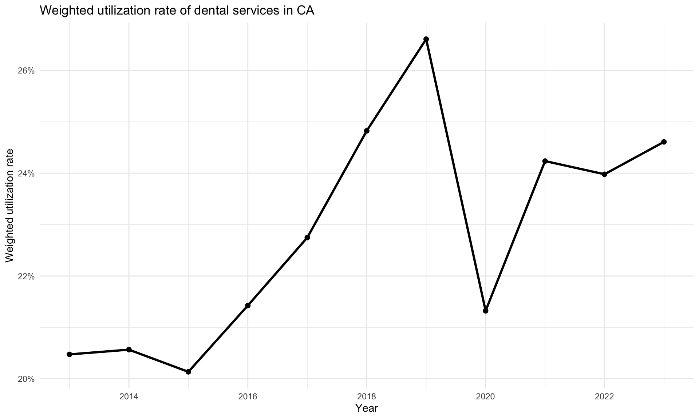
Statewide weighted dental service utilization in California shows:
The mean utilization rate was 23%, and enrollment increased by over 111%.
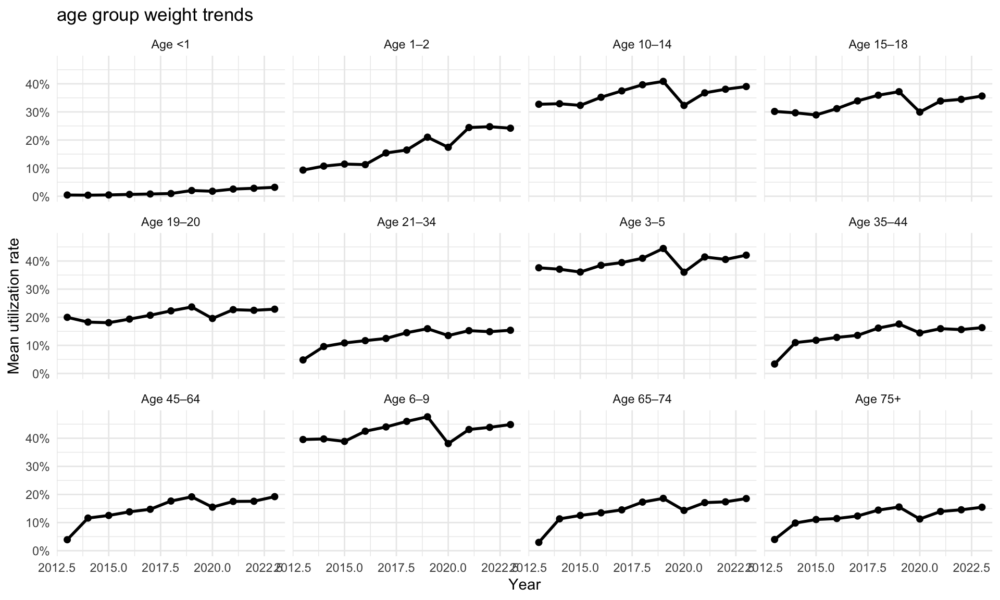
Across all years, utilization rates vary substantially by age:
Time-series plots reveal persistent age gradients, with younger groups accessing services more frequently than adults.
To complement the time-series patterns above, we also aggregated utilization across all years and service types, weighting by the eligible population size (denominator) in each age group. This provides a long-run view of which age groups rely most heavily on dental services overall.
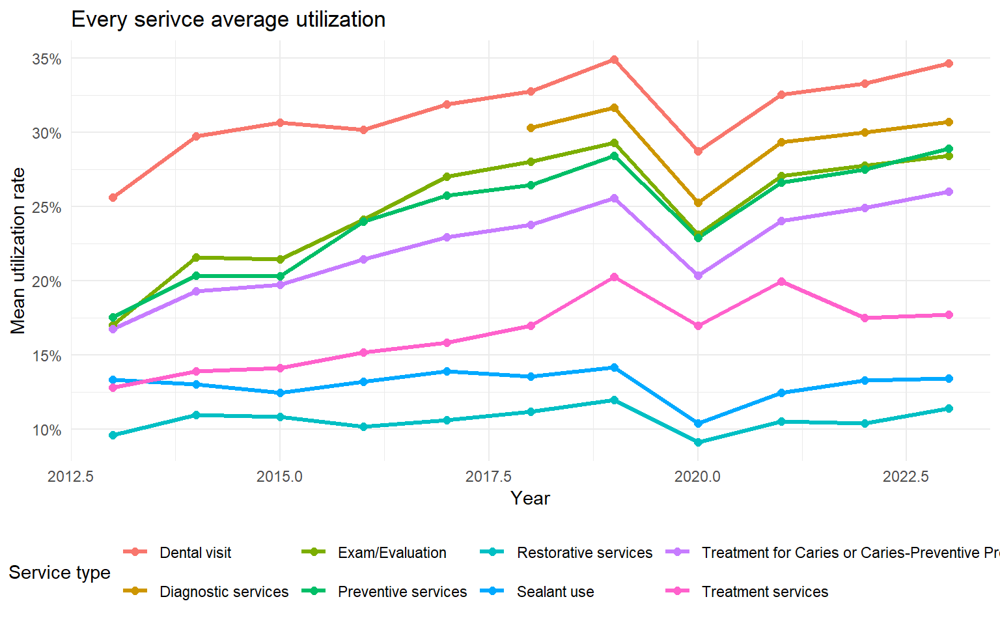 Eight service categories were evaluated from 2013–2023:
These patterns suggest sustained improvements in preventive care access over the decade.
| term | slope | p_value |
|---|---|---|
| year | 0.0061 | 0.000137 |
| r.squared | adj.r.squared | AIC | BIC |
|---|---|---|---|
| 0.1873 | 0.1798 | -882.5686 | -834.815 |
An ITS model was used to estimate the effect of COVID-19 on statewide utilization:
The long-term regression model reveals a clear and statistically significant upward trajectory in statewide dental service utilization prior to the COVID-19 pandemic. The estimated yearly slope of +0.0061 (p < 0.001) indicates steady, sustained growth in utilization leading up to 2020—reflecting expanding engagement with Medi-Cal dental services.
When viewed alongside the observed data, this strong pre-pandemic upward trend highlights the magnitude of the disruption that occurred during COVID-19. Despite the long-term growth pattern captured by the model, statewide utilization dropped sharply in 2020, breaking from the established trajectory. Although the model does not explicitly estimate a COVID-specific coefficient, the divergence between the predicted trend and the actual 2020 outcomes underscores a substantial pandemic-related shock to in-person dental care access.
Model fit measures (R² ≈ 0.18, AIC ≈ –882) indicate that the model reasonably captures long-term dynamics, reinforcing the interpretation that COVID-19 represents a pronounced deviation from an otherwise consistent upward trend.
To contextualize California utilization patterns, national NHANES data were examined for total and untreated caries in permanent teeth.
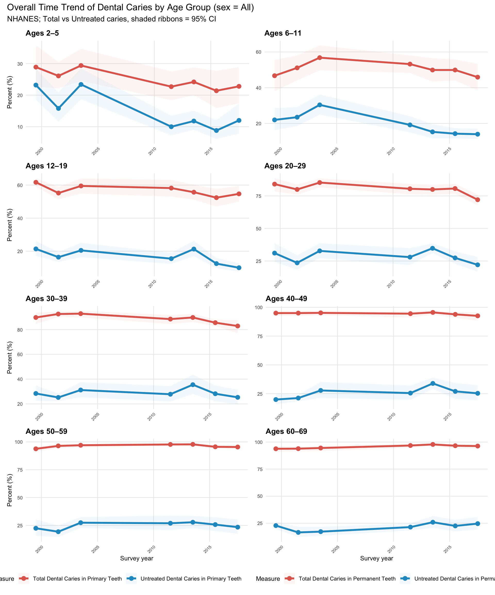
The NHANES age-specific trend panels show three consistent national patterns:
Total caries prevalence is high across all age groups, with only a slight decline in recent cycles.
Untreated caries decreases more noticeably, especially among adolescents and young adults.
Adults exhibit substantially higher total caries levels, often 80–90%, reflecting cumulative disease burden.
Overall, the national trends highlight high total caries, gradual improvement in untreated disease, and strong age gradients—patterns that closely resemble California’s age-based disparities.
| dentition | age_group | outcome | slope_per_year | slope_per_10yrs | slope_10yr_lower | slope_10yr_upper | n_cycles | first_year_mid | last_year_mid |
|---|---|---|---|---|---|---|---|---|---|
| Permanent | 6-11 | Total caries | -0.31 | -3.05 | -6.90 | 0.79 | 7 | 1999.5 | 2017.5 |
| Permanent | 12-19 | Total caries | -0.34 | -3.41 | -7.06 | 0.24 | 7 | 1999.5 | 2017.5 |
| Permanent | 20-29 | Total caries | -0.41 | -4.09 | -9.10 | 0.92 | 7 | 1999.5 | 2017.5 |
| Permanent | 30-39 | Total caries | -0.43 | -4.28 | -7.10 | -1.46 | 7 | 1999.5 | 2017.5 |
| Permanent | 40-49 | Total caries | -0.04 | -0.44 | -1.69 | 0.80 | 7 | 1999.5 | 2017.5 |
| Permanent | 50-59 | Total caries | 0.02 | 0.16 | -1.81 | 2.12 | 7 | 1999.5 | 2017.5 |
| Permanent | 60-69 | Total caries | 0.21 | 2.13 | 0.68 | 3.57 | 7 | 1999.5 | 2017.5 |
| Permanent | 6-11 | Untreated caries | -0.22 | -2.22 | -4.35 | -0.09 | 7 | 1999.5 | 2017.5 |
| Permanent | 12-19 | Untreated caries | -0.45 | -4.53 | -9.03 | -0.02 | 7 | 1999.5 | 2017.5 |
| Permanent | 20-29 | Untreated caries | -0.04 | -0.38 | -8.83 | 8.08 | 7 | 1999.5 | 2017.5 |
| Permanent | 30-39 | Untreated caries | 0.10 | 1.05 | -3.84 | 5.94 | 7 | 1999.5 | 2017.5 |
| Permanent | 40-49 | Untreated caries | 0.54 | 5.38 | 0.20 | 10.55 | 7 | 1999.5 | 2017.5 |
| Permanent | 50-59 | Untreated caries | 0.21 | 2.10 | -2.88 | 7.08 | 7 | 1999.5 | 2017.5 |
| Permanent | 60-69 | Untreated caries | 0.23 | 2.29 | -2.32 | 6.90 | 7 | 1999.5 | 2017.5 |
| Primary | 2-5 | Total caries | -0.35 | -3.53 | -6.13 | -0.93 | 7 | 1999.5 | 2017.5 |
| Primary | 6-11 | Total caries | -0.17 | -1.69 | -7.38 | 4.00 | 7 | 1999.5 | 2017.5 |
| Primary | 2-5 | Untreated caries | -0.73 | -7.28 | -12.44 | -2.12 | 7 | 1999.5 | 2017.5 |
| Primary | 6-11 | Untreated caries | -0.70 | -7.01 | -11.39 | -2.63 | 7 | 1999.5 | 2017.5 |
NHANES slope estimates show that:
Total caries decline slightly for most younger age groups (e.g., −0.31 to −0.43 per year for ages 6–39), indicating gradual improvement. Older adults (50–69) show flat or slightly increasing trends (0.02 to 0.21).
Untreated caries decline more sharply, especially among children and adolescents (e.g., −0.22 for ages 6–11 and −0.45 for ages 12–19), while some adult groups (30–49) show small positive slopes, suggesting gaps in timely care.
Primary-teeth caries in young children show substantial declines (e.g., −0.35 to −0.73 per year for ages 2–5 and 6–11).
Overall, these patterns indicate slow national improvement, driven mainly by reductions in untreated disease among younger populations.
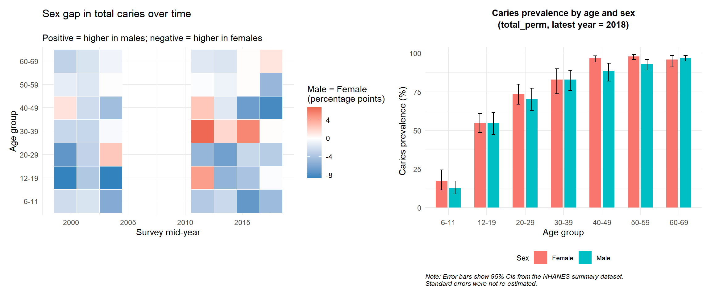
Sex differences in caries prevalence
The combined heat map and bar chart indicate that sex differences in dental caries prevalence are modest and inconsistent across NHANES cycles:
The heat map shows small male–female gaps, typically within ±8 percentage points, with the direction of the gap varying by survey cycle and age group.
No age group exhibits a persistent advantage; in some cycles males have slightly higher prevalence, while in others females do.
In the most recent NHANES cycle (bar chart), females and males show nearly identical prevalence across all age groups, with minimal separation in confidence intervals.
Overall, sex disparities in caries prevalence are present but small, non-systematic, and not clinically dominant compared with age or race/ethnicity differences.
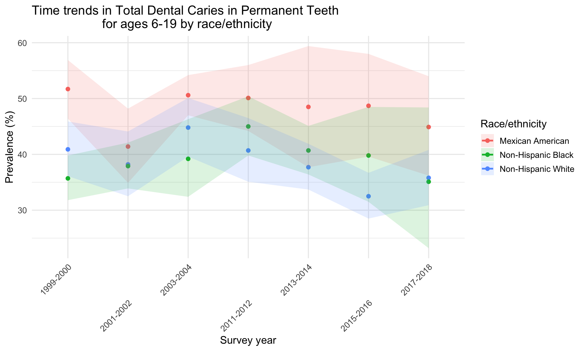
NHANES data show persistent race/ethnicity disparities in caries prevalence among children ages 6–19:
Mexican American children consistently exhibit the highest prevalence, remaining around 50–60% across most survey cycles.
Non-Hispanic Black children show intermediate prevalence, generally higher than Non-Hispanic White children.
Non-Hispanic White children consistently have the lowest prevalence, typically 10–15 percentage points lower than Mexican American children.
These differences appear across all survey years, with modest narrowing in some cycles but clear and persistent gaps overall.
These findings align with national reports documenting long-standing disparities in oral health outcomes and unequal access to preventive dental services.
NHANES findings collectively show:
Persistent high national prevalence of dental caries, especially among adolescents and adults.
Declining trends in untreated caries, with the clearest improvements seen in adolescents and young adults.
Strong age gradients, as prevalence rises sharply from childhood to older adulthood.
Moderate sex differences, with male–female gaps fluctuating across cycles but remaining relatively small.
Consistent racial/ethnic disparities, with Mexican American and Non-Hispanic Black children showing higher total caries prevalence than Non-Hispanic White children.
These national patterns provide an essential benchmark for interpreting California’s utilization results, highlighting both the underlying burden of oral disease and the structural inequities that shape access and outcomes.
This section synthesizes findings from California’s administrative utilization data and NHANES national oral health prevalence data. Together, they help assess whether California’s service utilization patterns are aligned with national disease burden and preventive care needs.
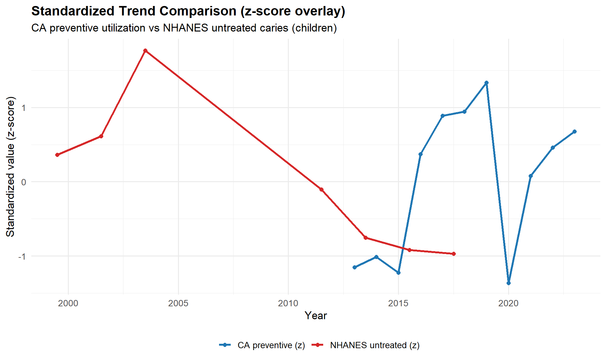
California preventive utilization shows a clear upward trajectory, especially after 2013, indicating increasing access to or uptake of preventive dental services.
NHANES untreated caries trends move in the opposite direction, showing a steady decline from 1999 to 2018, most prominently among children and adolescents.
The inverse patterns—rising preventive utilization in California and falling untreated disease nationally—suggest that expanded preventive care may correspond with lower caries burden at the population level.
Although the datasets cover different populations and non-overlapping years, the directionality of the trends is consistent: prevention increases while untreated disease decreases, supporting potential alignment between service delivery and disease reduction goals.
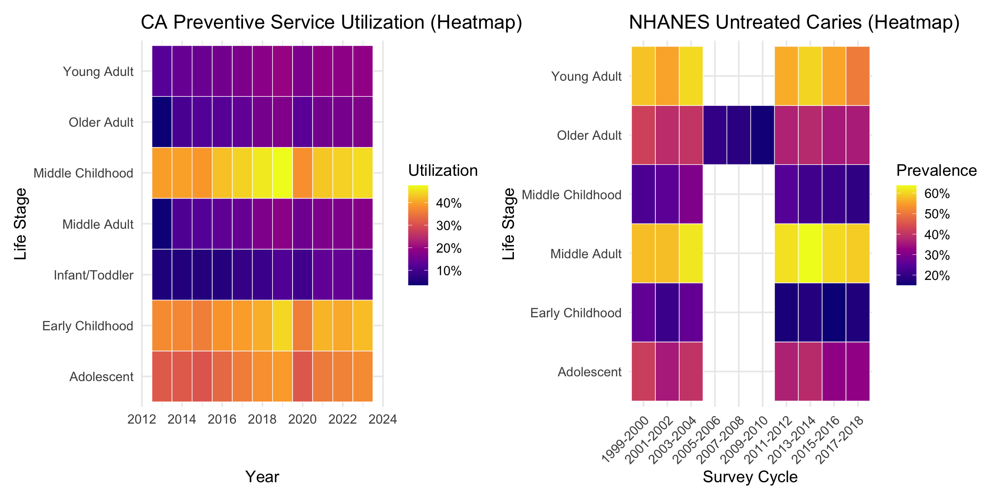
California heatmap shows that preventive service utilization is highest in children, especially in
Early Childhood (ages 3–5) and Middle Childhood (ages 6–9), with consistently elevated use through Adolescence.Utilization declines sharply moving into Young Adult, Middle Adult, and Older Adult stages.
NHANES heatmap shows that untreated caries prevalence is highest among adolescents and young adults, with notable burdens in Adolescence (12–19) and Middle Adult groups. Younger children show lower untreated prevalence, while older adults exhibit mixed but moderate levels.
Together, these patterns indicate that California directs more preventive and diagnostic dental services toward life stages with lower national untreated disease burden, while NHANES highlights much higher burden in adolescents and young adults. This suggests that service utilization in California may be disproportionately concentrated in younger children, whereas national need is highest in adolescents, pointing to potential opportunities to rebalance preventive resources.
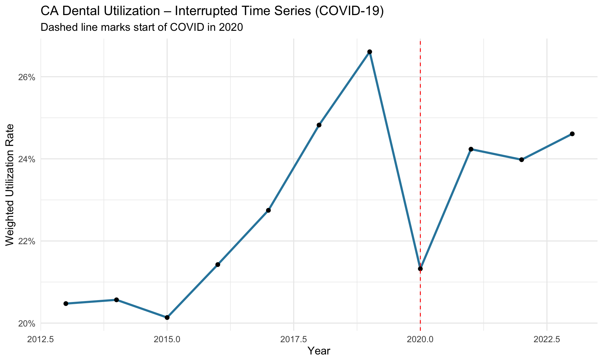 We estimate the following model:
\[ \text{utilization}_{t} = \beta_0 + \beta_1 \cdot year_t + \beta_2 \cdot covid_t + \beta_3 \cdot (year_t \times covid_t) \]
Both datasets show clear signs of COVID-19–related disruption, although the magnitude and timing differ:
California’s utilization experienced an abrupt decline in 2020, visible in the interrupted time-series plot.The ITS model confirms a strong pre-COVID upward trend (β₁ ≈ 0.014, p < 0.001), but no statistically significant level or slope change at the onset of COVID (β₂, β₃ not significant), reflecting a sharp but temporary dip rather than a long-term shift.
NHANES data (collected before the 2020 lockdowns) already showed flattening or slowing improvements in untreated caries during 2015–2018, indicating a disruption-like pattern even before the pandemic, consistent with broader national service reductions and access barriers.
Taken together, the two datasets indicate that COVID-19 produced noticeable but short-lived service disruptions in California, while NHANES shows pre-pandemic stagnation in disease improvements, suggesting that national oral health systems were already vulnerable to shocks that became more visible during the pandemic.
Across prior analyses, California utilization patterns and NHANES disease metrics reveal several converging themes regarding disparities, trend direction, and population-level alignment with national oral health needs.
Age disparities
California consistently shows the highest preventive service use among young children, whereas NHANES indicates the greatest untreated caries burden among adolescents and adults. This divergence suggests that California’s utilization patterns prioritize early-life preventive care, while national disease burden remains concentrated in older youth and adults
Sex disparities
NHANES visualizations demonstrated small but persistent male–female differences in caries burden, with no consistent directional advantage. Although California lacks sex-specific utilization data, the modest national gaps imply limited sex-based inequity in the corresponding service context.
Race/ethnicity disparities
NHANES exhibits pronounced and persistent disparities, particularly among Mexican American and Non-Hispanic Black youth. The absence of race/ethnicity identifiers in California’s administrative data prevents equity-focused comparisons and represents a structural limitation for state-level monitoring.
Trend direction and intensity
NHANES exhibits pronounced and persistent disparities, particularly among Mexican American and Non-Hispanic Black youth. The absence of race/ethnicity identifiers in California’s administrative data prevents equity-focused comparisons and represents a structural limitation for state-level monitoring.
Overall synthesis
Integrated with earlier trend plots, ITS estimates, and demographic heatmaps, the evidence suggests that California’s dental utilization system is broadly aligned with national prevention goals, characterized by strong emphasis on early-life preventive care and resilient post-COVID recovery. However, critical equity gaps—particularly the absence of race/ethnicity data—limit the state’s ability to assess whether service improvements are equitably distributed across populations.
Our analysis provides a comprehensive view of dental service utilization patterns in California (2013–2023) and situates these findings within the broader context of national oral health trends reported by NHANES. Several key themes emerge:
Long-term improvements alongside persistent disparities
COVID-19 introduced measurable disruptions
Service-type patterns highlight preventive demand but uneven use
Trends suggest alignment between utilization and disease burden
Implications for policy and practice
These patterns underscore the need for age-tailored strategies and potentially enhanced coverage or outreach programs to reduce disparities and sustain long-term improvements.
Several limitations should be considered when interpreting the findings from this project. These limitations arise from both the structure of the datasets used and the analytic constraints associated with aggregated data.
Use of aggregated administrative data in California
Observed patterns therefore reflect population averages and may mask within-group disparities.
Limited time-series resolution and ITS model power
COVID-related effects may be underestimated or imprecisely measured.
NHANES summary tables restrict analytic flexibility
Temporal misalignment between datasets
Trends cannot be aligned year-by-year, and COVID-19 effects cannot be examined in NHANES. Comparisons rely on pattern similarity rather than direct temporal correspondence.
Utilization does not equate to disease burden
High utilization does not necessarily imply improved oral health; low disease burden does not necessarily imply adequate access. Interpretations linking utilization and disease burden must therefore be made cautiously.
This project examined statewide dental service utilization patterns in California from 2013 to 2023 and compared these trends with national oral health indicators from NHANES. Our findings highlight both meaningful progress and persistent challenges in achieving equitable access to dental care.
The comparison of utilization and disease burden suggests that improvements in preventive service use may be contributing to broader positive trends in oral health, although the relationship cannot be assessed causally with the available data. Nevertheless, the findings support the conclusion that California’s dental system has expanded access to preventive care in a manner consistent with national oral health needs.
Continued progress will require:
These results provide a foundation for future work aimed at understanding patterns of care, addressing inequities, and improving population oral health outcomes.
California Department of Health Care Services. (2023). Dental utilization measures and sealant data by age groups, calendar year 2013–2023. data.gov. https://catalog.data.gov/dataset/dental-utilization-measures-and-sealant-data-by-age-groups-calendar-year-2013-to-2021-61ecf
Centers for Disease Control and Prevention. (2025). NHANES: Select oral health prevalence estimates. healthdata.gov. https://healthdata.gov/CDC/NHANES-Select-Oral-Health-Prevalence-Estimates/xif4-xkww/about_data
National Institute of Dental and Craniofacial Research. (2022). Oral Health in America: Advances and Challenges — Section 2 summary. NIDCR, NIH. https://www.nidcr.nih.gov/research/oralhealthinamerica/section-2-summary
Ng, T. C. H., et al. (2023). A concise review of dental sealants in caries management. PMC Open Review. https://pmc.ncbi.nlm.nih.gov/articles/PMC10149715/